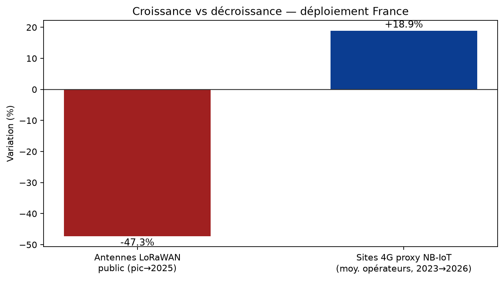
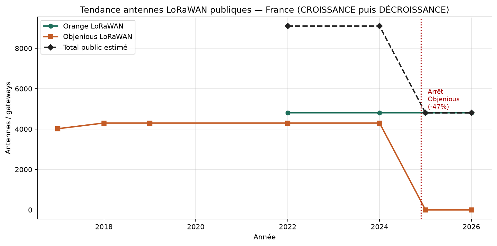
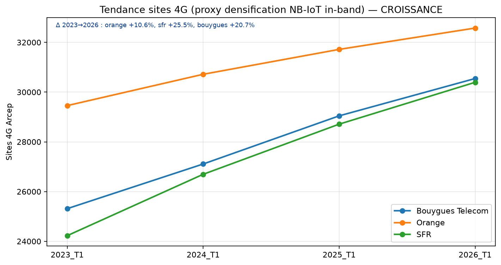
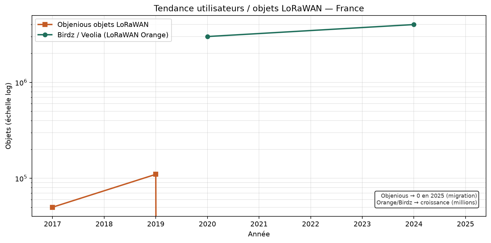
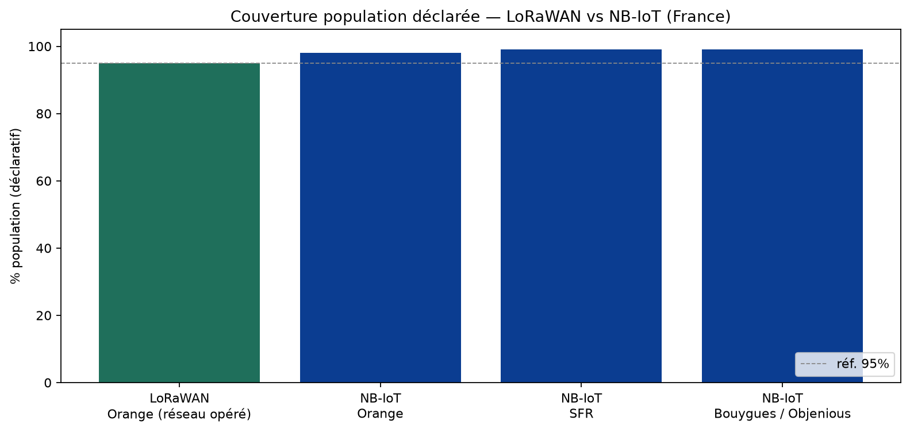
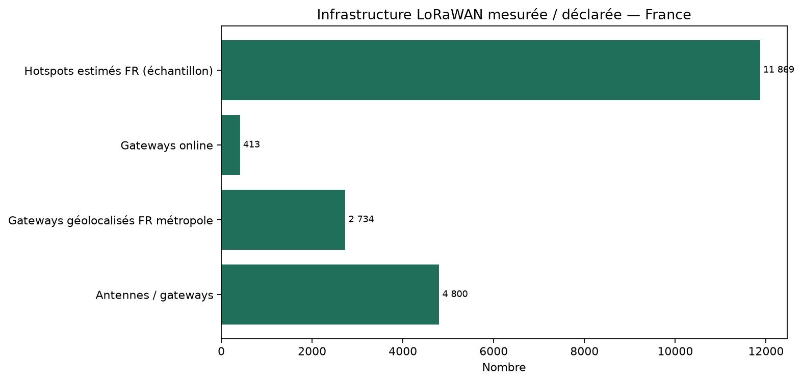
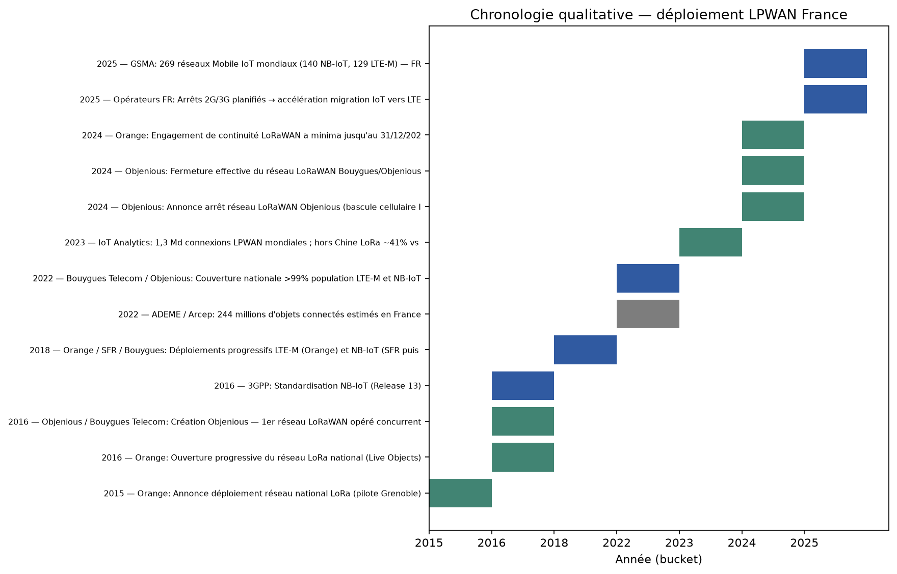

Étude LoRaWAN vs NB-IoT — France
Graphiques générés automatiquement (données Arcep / opérateurs / APIs).
- Croissance vs décroissance
- Antennes LoRaWAN publiques
- Sites 4G proxy NB-IoT
- Utilisateurs / objets LoRaWAN
- Couverture population
- Infrastructure LoRaWAN (snapshot)
- Chronologie

1. LoRaWAN public −47,3 % vs proxy NB-IoT +18,9 %

2. Antennes LoRaWAN publiques — pic ~9100 puis chute à ~4800

3. Sites 4G (proxy NB-IoT) — croissance Orange/SFR/Bouygues

4. Utilisateurs LoRaWAN — Objenious → 0 ; Birdz/Orange en hausse

5. Couverture population déclarée LoRaWAN vs NB-IoT

6. Infrastructure LoRaWAN mesurée / déclarée (snapshot)

7. Chronologie qualitative du déploiement LPWAN en France